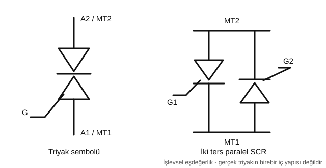
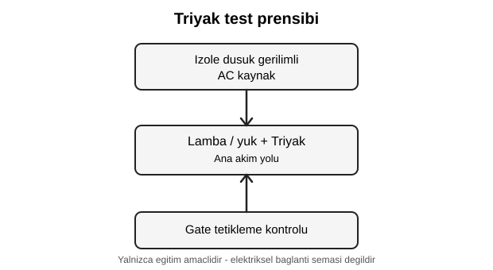

Triyak ve Ölçümleri
Yapısı :
Triyak bir Alternatif Akım (AC) anahtarıdır. AC akımda her iki yönde de iletkendir. Gate ucuna verilecek DC veya AC tetikleme sinyali ile iletime geçebilir. Ana uçlar arasındaki AC akım yön değiştirirken gerilimin sıfır olduğu anda triyak yalıtkan duruma geçer. Triyak’ın devamlı iletimde kalabilmesi için sürekli tetikleme sinyali verilmeli veya AC akımın her yön değiştirdiği anda tekrar tetiklenmelidir.
Triyak’ın hem DC hemde AC akımla tetiklenebildiğinden bahsetmiştik. Eğer DC akım ile tetiklenirse -ki DC akımın artı (+) veya eksi (-) olması farketmez- tetikleme akımı var olduğu sürece triyak iletkendir. Tetikleme akımı kesildiğinde iletimini kaybeder. AC akım ile tetklendiğinde ise; bilndiği üzere AC akım sinüsoidal bir akımdır yani frekansına bağlı olarak saniyede belirli aralıklarla bir sinüs dalgası çizer. İşte bu sinüs dalgasının pozitif ve negatif alternanslarında triyak iletkendir ancak sinüs dalgasının sıfır olduğu anlarda triyak yalıtkandır.
Triyak çok düşük bir gate akımı ile saniyenin binde birinde iletime geçer ve üzerinden büyük akımlar geçirebilir. Bu yüzden çok küçük akımlarla büyük akım gerektiren yüklerin kontrolünde kullanılabildiği gibi AC akımların DC akımlarla kontrol edilebilmesinide sağlar yani AC akım, DC akım ile çalışan transistörlü devreler tarafından kontrol edilebilir.
Aslında triyak’lar iç yapı olarak birbirine ters bağlı iki tristör’den başka bir şey değildir. Yapılan bu özel bağlantı ile AC akımın her iki yönünde de bir tristör iletime geçerek triyak’ın sürekli iletken olması sağlanır. Triyaklarda A2 ucu daima yükün bağlandığı uçtur. Aşağıdaki şekilde triyak’ın devre şemalarında kullanılan sembolü ve iki tristör kullanılarak yapılan eşdeğer devre şeması görülmektedir.

Sağlamlık Kontrolü :
Yine tristör’de olduğu gibi triyak da hem ölçü aleti ile hemde basit bir devre ile kontrol edilebilir. Ancak ölçü aleti ile yapılan kontrol ölçü aletinin içindeki pil kullanılarak yapıldığından triyak’ın yüksek gerilimlerde doğru çalışıp çalışmayacağı konusunda tam bir fikir vermez. En iyi ölçüm triyak’ın kullanım amacına uygun basit bir devre ile yapılabilir.
Öncelikle ölçü aleti ile yapılabilecek kontrolü anlatma istiyorum; Ölçü aleti Ohm metre konumunda X1 kademesine alınır. Triyak’ın Gate ve A1 uçları her iki yönde de minimum direnç (40-60 ohm) göstermelidir. Ayrıca A2 ve Gate uçları ile A2 ve A1 uçları her iki yönde de maximum (açık devre) direnç gösteriyorsa triyak sağlamdır.
Devre kullanılarak ölçüm yapmak için gereken basit bir devre şeması şekilde görülmektedir. Bu devrede gate ucuna DC 12V (artı veya eksi) verildiği sürece triyak’ın iletimde kalması, tetikleme kesildiği anda ise iletimden çıkması gerekir. Eğer tetikleme için AC akım kullanılırsa yine tetikleme sinyali olduğu sürece triyak iletimde kalacaktır ancak burada AC akımı oluşturan sinüs dalganın sıfır değerine ulaştığı anlarda triyak çok kısa bir süre (bu süre AC akımın frekansına göre değişir) yalıtkan olacaktır. Sinüs dalganın pozitif ve negatif alternanslarında ise iletken olacaktır.
